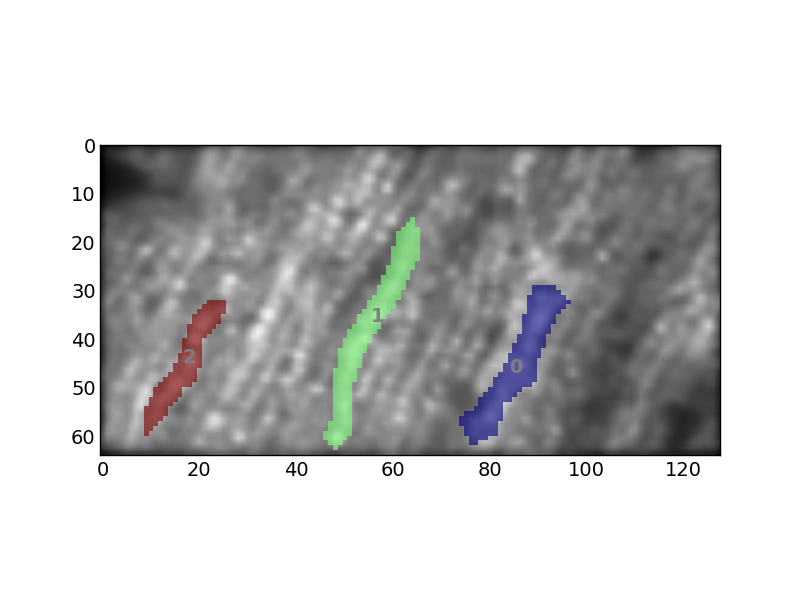
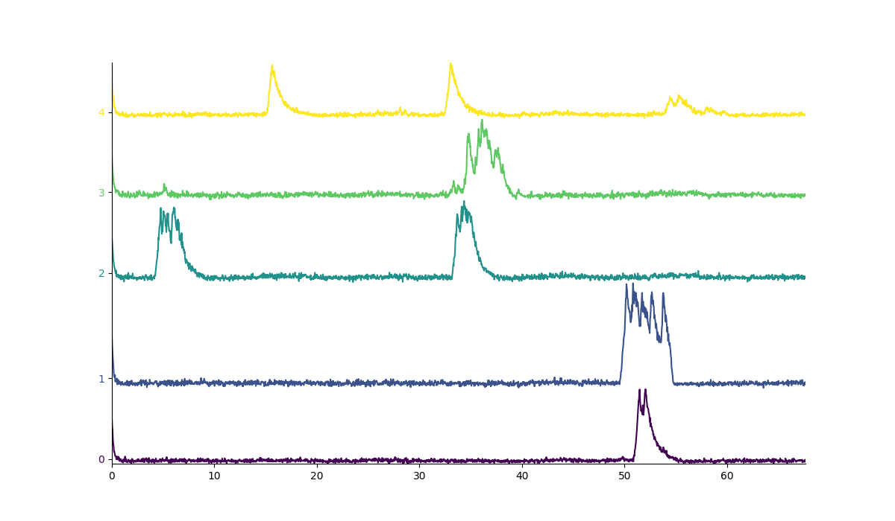

About this library¶
* Please note that as of January 2017, I am in the process of updating the library in many ways (including redoing the website). The current version is likely to work in many respects, but some features may be broken. I anticipate completing this upgrade by mid 2017. *
The pyfluo library enables easy and efficient manipulation of imaging data using a set of custom-built data structures and functions.
This project is hosted on github.
Note that pyfluo is intentionally a continuous work in progress; as such, neither the code nor the documentation is entirely complete. That said, it has become increasingly functional for a wide variety of tasks.
Because the library is constantly under progress, the documentation for functions and classes on this site may be out of date. The most reliable way to determine the available functions and their signatures is to interactively check them after importing the package (for example in ipython).
Requirements¶
The library has the following dependencies:
- numpy
- scipy
- scikit-learn
- matplotlib
- opencv (for certain features only)
Note that currently, only numpy, scipy, and matplotlib are enforced on installation of the package.
Installation¶
- Download the project here.
- Extract and navigate to the root directory.
- Run
python setup.py install
A quick example¶
Here is a quick-start example to get you moving with pyfluo.
1 2 3 4 5 6 7 8 9 10 11 12 13 14 15 16 17 18 19 20 21 22 23 24 25 | import pyfluo as pf
# create a movie from a tiff file
mov = pf.Movie('mov.tif', Ts=0.032)
# motion correct the movie
mov = pf.motion_correct(mov, max_shift=10)
# play the movie
mov.play()
# manually select some ROIs
roi = mov.select_roi()
# display a projection of the movie, with rois on top
mov.project(show=True, roi=roi)
# extract traces
tr = mov.extract(roi)
# convert traces to ∆F/F
dff = pf.compute_dff(tr, window_size=1.0)
# display traces
dff.plot()
|
Shown below are examples of the projected movie (left), and extracted traces (right).
 {kind=link}
{kind=link}